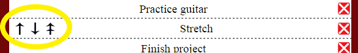

I wrote this program to help me organize my life a little better. I've always found it helpful to plan out my year. The problem is most people do this, but then don't take the necessary steps to accomplish their goals. That's how I came up with this concept of split time frames. Every year I will sit down and and write out goals for the year. Then I use those goals and ask myself what I could do monthly (or this month) to work towards accomplishing my yearly goals (the "monthly" tab)? Then I break it down further and say what could I do today or this week to accomplish the monthly goals (the "daily" tab)? You'd be surprised how much more you accomplish by doing this if you commit to looking at your list just a couple times a week.
This creates a way to make sure you're constantly working towards your overall goals throughout the year and not getting lost in the shuffle. I also use the daily tab for chores or things that just need to get done regardless of overall goals.
This list will automatically save to your browsers local storage on your computer. Using the same browser from the same device will allow your information to be saved. If you open this webpage from a different device your list will not show up. It's not saved in a database online, it's stored locally.
Type in your item and press "enter" or hit the arrow icon to add it to the list.
Clicking the "x" icon next to a list item will remove it from your list.
Click any item on the list and it gets checked off and moved to the bottom.
To uncheck an item just click it again and it will be moved to the top of the list.
When you hover over a list item arrows will appear. The double arrow on the right lets you move a list item to the top by clicking on it. The other two allow you to move an item up or down one spot on the list.
This will clear all list items from the current time frame you are in. An alert box will pop up to make sure that you want to do this.